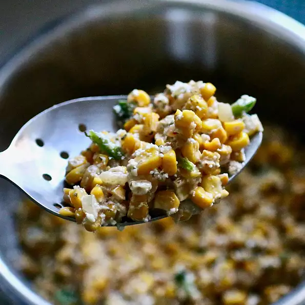

Spiced Street Corn

Description
A quick street corn recipe.
Prefect for a party or spice lovers.
Ingredients
- 2 tablespoons vegetable oil
- 4 cups fresh sweet corn kernels
- ½ medium white onion, chopped
- 3 cloves garlic, minced
- 1 small jalapeno pepper, seeded and minced
- 3 ½ cups crumbled cotija cheese, divided
- 2 tablespoons mayonnaise
- 2 medium limes, juiced
- ¼ teaspoon cayenne pepper
- sea salt to taste
- 2 tablespoons chopped cilantro
Steps
- Heat oil in a large cast iron skillet over medium heat until sizzling. Add corn and cook, stirring occasionally, until the corn is toasted and golden brown, 15 to 20 minutes. Add onion and garlic and cook for another 30 seconds. Remove from the heat and allow to cool, 10 to 15 minutes.
- Mix corn mixture, jalapeno, 3 tablespoons cotija cheese, mayonnaise, lime juice, cayenne, and salt together in a mixing bowl. Adjust seasonings, adding more of your preferred flavors if desired. Top with remaining cotija cheese and cilantro.